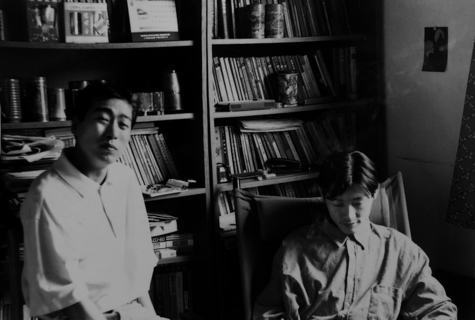
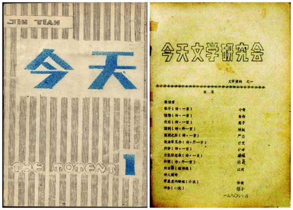

朱朱搬到长江路邓府巷没多久，我也从南京东郊的孝陵卫住到了汉口路，和他仅隔两个街区。汉口路那所房子位于一座破旧的筒子楼顶层，由于地处闹市，很快成为朋友圈的聚会场所。几乎每天晚上都有人在街边冲我的窗户大呼小叫；由于楼内没有卫生间，甚至下楼去趟公厕，也时常与提前热身的朋友不期而遇。这种甜蜜的搅扰，精力和时间的透支，直到附近第一家酒吧开张才逐渐缓解——而那间“半坡村”酒吧，后来也成为南京文艺圈的据点。
这种闹哄哄的气氛里，朱朱的来访多少有些奇特。他常常夜里骑车过来，然后一声不吭的坐上几个小时。在日光灯管嗡嗡的电流声里，我们俩面对面坐着，却很少说话——他的敏感和拘谨，单独相处时愈加令人费解的疏离感，平均十分钟一个短句的习惯性沉默，使那段时间我们的会面每一次都像第一次那样艰难。因为尴尬和困窘，我不停瞥视房门，盼望漆黑的楼道天降救兵——令人绝望的是，他似乎每次都凭直觉巧妙避开了这里惯常的嘈杂。
这种尴尬还在于，作为同龄人我们的经历和写作旨趣如此不同。朱朱酷爱法国文学，而我更熟悉苏俄作家；他大学时代从马拉美、瓦雷里及里尔克、塞菲里斯诗中汲取的养分，也迥异于当时美国现代诗歌和“自白派”对我的影响。我们既不能直截地谈论写作，也不便贸然将闲聊转入私生活领域。此外，我们还需要回避某些更加敏感又乏味的主题。因为在屋子外的巨大阴影里，我们似乎从一开始就被不由分说地扔进了不同的写作阵营，不同的战壕——明显的，那套奇怪的战时规则使人们更信赖口号和行军，而非个人孤独的掘进。
不得不说，这可能也是八十年代诗歌遗产附赠的债务之一。尽管出于友善，人们多少夸大了那份少有继承人的遗产。此外，我还隐约感觉，如果说诗人们的见面有对弈的意味，那么朱朱显然有自己的一套规则。在野心、热情和个人才能划出的棋盘上，他的自负不容一粒算盘珠的轻侮。

这种对弈似乎无处不在。在参观完我的书房后，他傲慢地轻哼道，他的藏书至少是我的一倍。如果换个时间，天晓得这种书呆子式的自矜在这间屋子里会招致多少奚落——和这位信奉书斋苦修的诗人相比，我那拨同样年轻、野心勃勃的朋友似乎更热衷于炫耀身上天才的光环。而当我不无狐疑地回想他的小阁楼，邓府巷局促的单室间，我相信这只是类似总机接线员的另一种表达——直到后来，我才见识了他守财奴似的藏书：那些至今我敬而远之的密宗大师日记和佛教典籍，冷门的方志、各种人物小传、神话传说、考古和游记——它们就像一笔秘密的财宝，一直被辗转寄存在城中各处。
当艰涩的交谈无奈地转到阅读，令人诧异的一幕发生了。不知循着哪条幽暗的小径，我们迥异的诗歌之旅开始了频繁交叉：史蒂文斯，叶芝，布罗茨基，曼德尔斯塔姆，普拉斯、茨维塔耶娃，阿波里奈尔，乃至一些冷僻的欧美小说家和批评家……或许对今天的年轻诗人来说，那些烂熟的名字甚至不足以构成谈资。但像觅食的小鸡到处点啄，在那个匮乏的年代似乎是很多人的共同记忆。除了佛罗斯特和洛尔迦——让我想想，可能还有北欧现代诗，艾米莉·狄金森，惠特曼，俄罗斯“轻诗派”，勃莱，总之，在这间屋子里，此前很少有人和我分享这些被视为“二手”的阅读经验。
记得那时，我开始暗中模仿阿什伯利。凭借对运动派绘画和纽约实验音乐的有限了解，我一度自得地认为，他是我一个人的诗人——直到一年后，朱朱搬进中山门的合租公寓，我才第一次看见这位傲慢的美国人：他的照片早已镶入镜框，挂在小餐厅的墙上。那个镜框就像一座神殿，紧挨着博尔赫斯像和一幅他和王静钟爱的比亚兹莱的插图。出于震惊，我有些讪讪的评论道：“长得有点像我姑父。”
我们从一本翻得快散页的《史蒂文斯诗集》开始的握手，越过米沃什《拆散的笔记簿》，此后不断在希尼，毕肖普，休斯及至扎加耶夫斯基的诗歌上重演。朱朱有着更加严谨和系统的阅读和写作训练。一旦谈起诗歌，他惯常的谨慎和缄默也在无形之中增加了说服力。而当时，他已经流露出对历史、知识考古乃至艺术批评的持久兴趣。在掉书袋方面，他无疑是词语和思想碎片的一流收藏家。和天底下的守财奴一样，他对细节有惊人的记忆力。每当他随口引用阿波里奈尔的画评或周邦彦的婉约词，我总怀疑他出门前做足了功课，蹬着车一路默诵而来。
此外，我们对绘画乃至当代艺术也有同样的爱好。尽管意象或图像性元素在他诗中的形迹并不显要，但从他诗中围绕核心隐喻的推进方式，依然能看出潜在的影响——至于音乐，尤其古典乐，当然了，我们基本都属于“乐盲”；不过就因为此，我偶尔会心虚地嘲笑他说，作为朋克迷和民谣爱好者，我可以让他一个炮。
我已经想不起来，当时我们都谈了些什么。这一分钟当我徒劳地扫视书架，一本精装的《丽达与天鹅》唤起了一个很小的细节：当我随口抱怨叶芝过于甜腻的嗓音，朱朱对《黑塔》和《马戏团动物的逃亡》的推崇——自此，我才逐渐注意到叶芝诗风的蜕变和他晚期诗的冷峻和老辣——甚至，他诗中那位昔日“热衷于社会改良”的家庭主妇，后来也改头换面，不约而同地出现我们新近的诗中。他写道：当年那个狂野的女孩，爱／自由胜过梅丽美笔下的卡门，走在／游行的队列中，就像德拉克洛瓦画中的女神。”（《月亮上的新泽西》）
无论如何，朱朱使这座城市的诗歌景观有了更大的纵深，更加微妙和丰富的呈现。在写作上，他和我那些朋友们似乎构成了截然不同又泾渭分明的两极——固执，原则，克制，给人压力并臻于极致。这种对峙就像飞行座舱里的陀螺仪表，至今对我意义非凡——尤其是，当时我摇摆的写作正在尝试挣脱某种风格的辖制，而他的出现恰好构成了一面自我观察的幽暗之镜。
不同于现在相处的随意散漫，那些夤夜长谈，沉默的对弈，阅读中的发现，秘密的分享和相互激励，因为他的沉默拘谨，似乎增添了一种密谋的气氛和紧张感。每当我把他送到漆黑的街边，总能感觉到一丝淡淡的疲惫和呼吸清冷空气的愉快，似乎有很多看似庞大的概念被撬动了，很多过去忽视的角落需要重新打量。通过交换后的视角，我开始留意事物的褶皱之美——其中复杂的回光和波纹也隐约标示了一块更加开阔的陌生水域。
但此后很长一段时间，我和朱朱的往来在现实层面仍然是单向的。即他和我的朋友们，包括同龄的朱文、吴晨骏、毛焰、楚尘等，由于气息和趣味的差异，尽管彼此友善却并无过多私交。而他则不断带来新的面孔，从最初的叶辉、韩雪，到后来的宋琳、陈东东、潘维、唐丹鸿、凌越、蔡天新、杨键、庞培和代薇等等——如果说当时我在这座城市交游甚广，如鱼得水，那么他就像一个谨慎的潜伏者，和城墙以外的世界保持着固定的通话频率。
我还记得在中山门城墙上，第一次见到叶辉的情形。在此之前，我对他的印象仅来自朱朱在《现在是枯水期》中的速写。当这个看似游手好闲的家伙抄着裤兜，仿佛掂着三枚不存在的铜钱，慢悠悠晃着腿，说到某位诗人的近况时，我愚蠢的带有恶作剧意味的挑衅再次发作了。我记得自己冷冷地回应道：“哦，他的钥匙找到了没有？”明显的，这个性情温和、诙谐的家伙被我毫无征兆的讥讽弄得有些不知所措——而我猜测，他一定在暗中把打卦的铜钱攥得更紧了。直到告别时叶辉才回过神来，弓着腰，指着自己油亮的谢顶。“再过几年，”他半开玩笑地报复道，“再过几年你就和我一样了。”——直到我回家翻开他的《在糖果店》，才明白遇到的是什么段位的诗人——而见鬼的是，被这位“江湖术士”不幸言中，不消几年我果真有了一副同样的秃脑门。
如果说粗嘎的南京话和漫画式的夸张，是我应对无聊或压力的护面罩或反击之矛，那么实际上，看似礼貌含蓄的朱朱对人事更加理想化，也更为挑剔和苛刻——而他试图建造的城市及其规则显然过于自我了。那种冷淡、矜持的天性，自我保护，过度的敏感，和骄傲伴生的自恋，很容易招致外人误解。而我确实曾在不同的场合听人议论他“难以相处”。还有一些人试图在酒桌上出他洋相，但朱朱的酒量显然出乎他们的意料；他不动声色，从不戳穿这些小伎俩，并总能在酒到微醺前及时脱身。
除非被逼到墙角，朱朱很少在背后评点他人。即便勉强给出一个说法，也必定是含混和矛盾的——无论谁，就算极为熟悉的朋友，也很难通过他那种讥讽的语调，复杂的隐喻，突然的沉默或厌倦，来猜测他在人际交往上的亲疏远近。在我印象里，即便对某人讨厌之极，他也至多拂袖而去，很少恶言相向。骄傲和虚荣使他免于这方面的抱怨或纠缠——又或者，他更愿意我们像过去一样，单独呆在某个房间里，与自己坐在对弈的棋盘两端。

确实，我们在房间以外的世界从无交集——即使那几年同为《今天》作者，我们也循着各自的联系图，他通过宋琳，而我联系张枣；同样的，正如我从没有出现在他主编的《联系》上，他也没有现身我参与编辑的《他们》——只有一次，我问他索要杨键和唐丹鸿的地址，打算向他们约稿时，试探地发出了相同的邀请。明显迫于友情的压力，他勉强交出一篇不足千字的短文。
令人失望的是，他的谨慎很快被证明是必要的：他因此一度被视为“他们”的一员——直到多年后，我才通过一篇访谈得悉他所承受的压力——至于他的辩护，对于那份判决显然过于隐晦和微弱了，仿佛多解释一句都会有损骄傲，或引起我的不快。而我确实有些生气，不仅因为按照那份可笑的判决，我被归入了不道德的、低劣的一方，我还觉得在此问题上，他连自辩都有些多余。